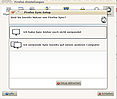
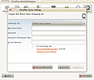
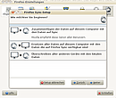
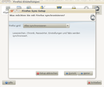

Firefox Sync
Archivierte Anleitung
Dieser Artikel wurde archiviert, da er - oder Teile daraus - nur noch unter einer älteren Ubuntu-Version nutzbar ist. Diese Anleitung wird vom Wiki-Team weder auf Richtigkeit überprüft noch anderweitig gepflegt. Zusätzlich wurde der Artikel für weitere Änderungen gesperrt.
Anmerkung: Firefox ist in der Version 3.5 und 3.6 nicht mehr in den Paketquellen enthalten.
Firefox Sync ist eine Erweiterung für den Browser Firefox in den Versionen 3.5 und 3.6, mit dem nahezu alle Daten des Browsers abgeglichen werden können und somit auf mehreren Rechnern dieselben Einstellungen, Lesezeichen, Passwörter, Chronik und sogar Tabs zur Verfügung stehen. Zur Synchronisation kann ein Server von Mozilla oder ein eigener Server eingesetzt werden.
Installation¶
Sync kann auf dieser Seite  heruntergeladen werden. Das Plugin wird nach Klick auf "Jetzt Installieren" automatisch installiert.
heruntergeladen werden. Das Plugin wird nach Klick auf "Jetzt Installieren" automatisch installiert.
Hinweis:
Ab Version 4.0 von Firefox ist die Synchronisation von Lesezeichen, Tabs, Passwörtern und History über verschiedene Rechner und Mobiltelefone im Browser integriert ("Einstellungen -> Sync"). Die Installation des genannten Plugins ist daher überflüssig.
Einrichtung¶
In diesem Artikel wird nur auf die Einrichtung zur Synchronisation mit dem Mozilla-Server eingegangen. Wer seinen eigenen Server nutzen will, findet hier weitere Informationen.
Konto erstellen¶
Nach der Installation muss man sich ein Konto erstellen, dieser Schritt ist selbsterklärend. Zu beachten ist, dass man zum Einen ein Passwort für seinen Account benötigt und zum Anderen eine Passphrase mit der die Daten verschlüsselt werden. Die Erstellung dieses Kontos erfolgt dabei direkt über das Plugin.
|  |
| Auswahl zwischen bestehendem Konto und neuem Konto erstellen |
|  |
| Eingaben zur Erstellung eines neuen Kontos |
Daten dem Plugin mitteilen¶
Weave ist ab sofort in der unteren Statusleiste des Browsers zu sehen. Über einen Rechtsklick  können die Einstellungen geändert, eine Synchronisation ausgelöst und Verbunden/Getrennt werden.
können die Einstellungen geändert, eine Synchronisation ausgelöst und Verbunden/Getrennt werden.
|  |
| Synchronisationsrichtung |
Synchronisationsmöglichkeiten¶
Es gibt drei Möglichkeiten der Synchronisationsrichtung (empfohlen wird die erste):
Alle Daten zusammenführen
Alle Daten durch die Weave-Daten ersetzen
Weave-Daten durch lokale Daten ersetzen
|  |
| Synchronisationsoptionen |
Weiterhin kann eingestellt werden was synchronisiert werden soll. In der Standardeinstellung werden alle Daten abgeglichen. In den benutzerdefinierten Einstellungen, kann man wählen welche der folgenden Kategorien synchronisiert werden:
Lesezeichen
Passwörter
Einstellungen
Chronik
Tabs
Weitere Informationen¶
Sicherheit der Daten¶
Auf der Webseite von Mozilla Weave, kann man über die Sicherheit folgendes nachlesen:
"Weave encrypts all of your data before transmitting it to the server, using a secret phrase that is known only to you, and not stored anywhere else. The server cannot read the data, and an attacker could not read your data either, unless he knew your secret phrase. When you set up a new browser to synchronize with weave, you provide your secret phrase, which allows that browser to read your data."
Übersetzt:
" Weave verschlüsselt all ihre Daten bevor sie auf den Server geladen werden. Dazu wird eine geheime Passphrase benutzt, dass nur Sie selbst kennen und nirgends gespeichert wird. Die Daten auf dem Server können von Mozilla nicht gelesen werden und auch Angreifer können die Daten nicht entschlüsseln, solange er die Passphrase nicht kennt. Wenn Sie einen neuen Browser mit Weave einrichten müssen Sie ihre geheime Passphrase eingeben, sodass der Browser die Daten entschlüsseln kann."
Weitere Informationen dazu.
Wer dieser Methode dennoch nicht traut, kann auch seinen eigenen Server aufsetzen.
Wie oft werden die Daten abgeglichen¶
Wird Weave nur auf einem Rechner genutzt werden die Daten alle 24 h abgeglichen. Bei mehreren Rechnern wird öfter synchronisiert, in der Regel circa einmal pro Stunde. Bei sehr starker Nutzung kann es vorkommen das öfter synchronisiert wird.
Was wird synchronisiert¶
In der Standardeinstellung werden alle Daten, also Lesezeichen, Passwörter, Einstellungen, Chronik und Tabs. Dies kann aber eingestellt werden.
Problemlösungen¶
Firefox Sync "vergisst" alle Einstellungen¶
Wenn Firefox' Datenschutzeinstellungen die Chronik des Browsers bei jedem Beenden leeren sollen, werden auch alle Einstellungen für das Plugin gelöscht. Statt dessen muss in den Einstellungen im Bereich "Datenschutz" | "Chronik löschen" das Häkchen bei "Passwörter löschen" entfernt werden. Fortan merkt sich das Plugin die Daten auch über einen Neustart des Programms.
 Übersichtsartikel
Übersichtsartikel
- Erstellt mit Inyoka
-
 2004 – 2017 ubuntuusers.de • Einige Rechte vorbehalten
2004 – 2017 ubuntuusers.de • Einige Rechte vorbehalten
Lizenz • Kontakt • Datenschutz • Impressum • Serverstatus -
Serverhousing gespendet von